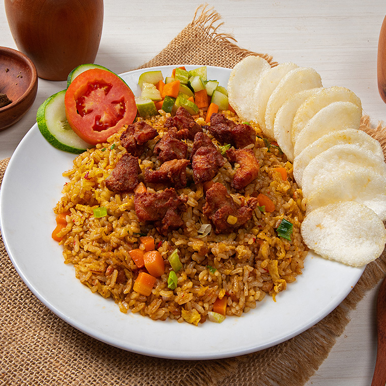
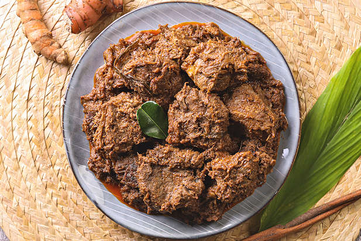
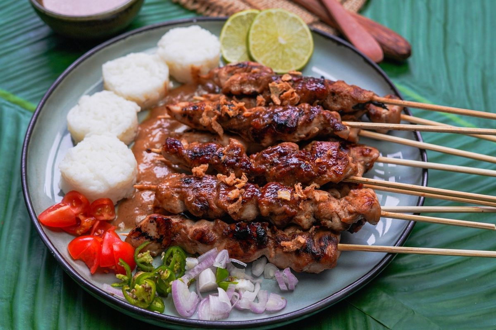

👉 Bahlil Lahadalia 👋

Bahlil Lahadalia 🍒 adalah seorang pengusaha dan politikus Indonesia. Ia dikenal sebagai tokoh yang pernah menjabat sebagai Menteri Investasi dan Kepala Badan Koordinasi Penanaman Modal (BKPM). Bahlil juga aktif dalam dunia politik dan organisasi kepemudaan di Indonesia.
Cek Instagram Saya 👉 Instagram Bahlil Lahadalia
Daftar Makanan Favorit Pak Bahlil
Nasi Goreng
Makanan khas Indonesia yang memiliki rasa gurih dan lezat.


Rendang
Rendang adalah makanan khas Indonesia yang kaya akan rempah-rempah.
Sate
Sate adalah makanan yang terbuat dari potongan daging yang dibakar.
